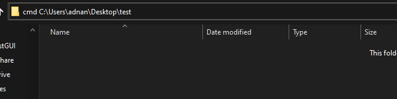
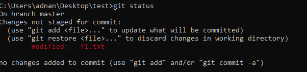

A simple Git Tutorial
What is Git?
Git is an open source a version control
system, developed by Linus Torvalds. Git is like an ultimate save button for your files/projects.
A save in Git records differences in the files and folders AND keeps a historical record of each save. This
feature is a game changer. As an individual developer, Git enables you to review how your project grows and to
easily look at or restore file states from the past. Once connected to a network, Git allows you to push your
project to GitHub or other alternatives such as: Bitbucket, Beanstalk, or GitLab for sharing and collaborating
with other developers.
What is GitHub?
First, lets clear that Git and Github are not related by any means. GitHub is a for-profit company that offers a
cloud-based Git repository hosting service. Essentially, it makes it a lot easier for individuals and teams to
use Git for version control and collaboration.
At a high level, GitHub is a website and cloud-based service that helps developers store and manage their code,
as well as track and control changes to their code.
How to Configure Git and GitHub?
1. Download and install Git:
First you will need to install Git from this Link
Make sure you select your right OS and hardware to install. Once downloaded just install it and toy dont need to
change any default settings, unless you really know what you are doing!
you can confirm your Git installation by openning Command Prompt and entering "git --version". if the output is
differet reinsatll.

2. Make a GitHub Account
It is as simple as making any social media account, just follow on-screen instructions. Remember your userName
and passwrod!
3. Back to Git Configurations
As you have installed Git, you are ready to use it on your local machine but before that lets connect your git
account with GitHub. In later part we will learn how to actaully use Git and GitHub.
4. Type the following Commands:
git config --global user.name "Your userName"
here userName is your GitHub profile userName, in double quotes.
git config --global user.email "yourname@example.com"
here in double quotes, enter your github email or email provided to you by github. (Im using email from Github.)
5. Check Configurations
Finally check, these configurations by entering:
"git config --global --list"
6. Other Configurations
There are many other configurations, that you can setup, but above are the ones most needed. For example you can set
VS Code as default editor for commit messages by entering:
git config --global core.editor "code --wait"

How to use Git and GitHub
Now that you have setup git and github, you are ready to do somethings with these!
1. Intiate a Git project
-
Make a new folder and open command prompt in that folder.
- An easier way to do so is:
- Go to that folder in explorer and type cmd before URI and enter.
-
Command Prompt will open in this folder!
-
Type and enter : git init
- Now you have successfully intiated git in this folder.
-
Output
-
Now you can use command:
git status
-
Output should be:
2. Basic Git Usage
-
Create two files in this folder, say f1.txt and f2.txt. and check git status
-
you can see both files are recognized as untracked.
-
Untracked means they are not added in git for tracking and you will have to add them.
-
-
Add untracked/new files by:
git add [fileName]
or to add all files:
git add .
-
once you add the files, they are placed to staging index. You can check this by:
git status
-
Staged files/folders are shown in green!
- Staged means they are ready to be committed!
-
Commit the files by:
git commit -m "Some meaningful commit message"
-
the output will be like this:

-
We use -m option with commit, when the commit message is short.
-
if we type only
git commit
this will open our default editor for writing commit message!
-
Make a change in f1.txt
-
Check status

-
Now you will need to add and commit again to record your changes!
-
Similarly, if you delete or add any new file/folder you will have to add those to git and commit!
-
you can check all commit records by:
git log